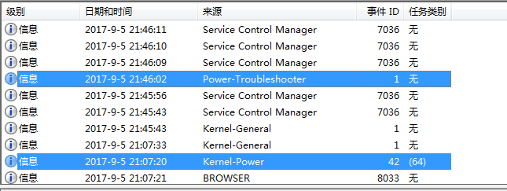
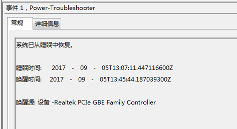

早上到公司发现电脑是开着的，记得下班的时候是休眠的，为什么自己开了呢。打开事件查看器，发现了问题所在。

电脑只休眠了不到一个小时就自动唤醒了(好像暴露了加班狗的属性)。
事件查看器显示唤醒电脑的是音频设备。估计跟电脑开着音乐有关系。

网上搜了下解决方案，有说从设备管理器就可以禁掉设备自动唤醒电脑，但是我从设备管理器并没有找到这个电源管理的选项。
不过也有第二种方案，直接通过命令行来禁止。首先列出支持唤醒电脑的设备：
1 | E:\playerground>powercfg -devicequery wake_armed |
果然发现了肇事者。果断禁掉：
1 | E:\playerground>powercfg -devicedisablewake "Realtek PCIe GBE Family Controller" |
再列举一下：
1 | E:\playerground>powercfg -devicequery wake_armed |
发现音频设备不见了，问题解决。要把它加回来也容易，把disable改成enable就可以了。
1 | E:\playerground>powercfg -deviceenablewake "Realtek PCIe GBE Family Controller" |
windows 10 睡眠唤醒检查
通过 powercfg -lastwake 可以查看上一次唤醒的原因。
检查唤醒设备没有发现问题：power /devicequery wake_armed
通过 powercfg /waketimers 可以查看下一次唤醒的定时器。
发现是 windows 的自动更新：Update Orchestrator，
使用管理员打开定时任务管理器，尝试禁用定时器，弹框提示当前用户没有权限。
找到一个帖子使用 PsTools 来启动定时任务。
psexec.exe -i -s %windir%\system32\mmc.exe /s taskschd.msc
再次尝试禁用定时器，成功！
再次用 powercfg /waketimers查询，把查询到的所有定时器干掉。
powercfg /waketimers 枚举活动的唤醒计时器
Disable Update Orchestrator from waking my computer
可能是与快速启动冲突，建议您尝试尝试关闭快速启动：
“Win+X”>>控制面板>>电源选项>>选择电源按钮的功能，
更改当前不可用的设置，勾选“启用快速启动”功能，确定。
https://answers.microsoft.com/zh-hans/windows/forum/all/win10%E7%9D%A1%E7%9C%A02%E7%A7%92%E5%90%8E/ac0cb7a7-9c7c-44e8-93f0-523246bd82aa
电源选项-睡眠，允许使用唤醒定时器，禁用
- Go to: Control Panel\Hardware and Sound\Power Options\Edit Plan Settings (it may also be called Change plan settings)
(you can alternatively just search for “Edit power plan” in the windows search bar) - Click “change advanced power settings”
- Go to “Sleep->Allow wake timers” and change the setting to Disable.